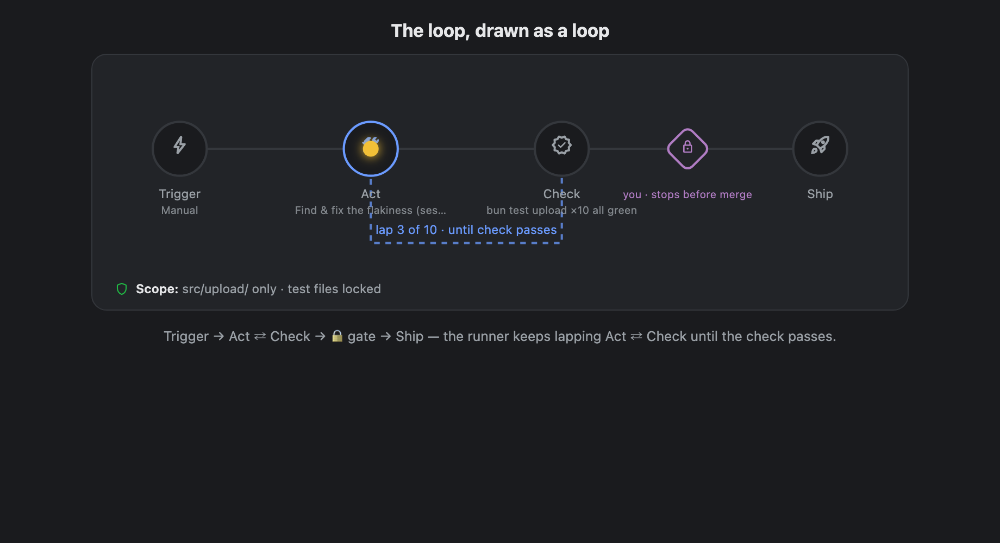

∞ Loops
Work that runs until it's verifiably done.
A walkthrough of the Anvil Loops concept — two real use cases: a bug fix and a new feature.
Concept mock · August 2026 · → to advance
Why loops?
“A loop is a task with a check. A task without a check is just hope.”
— the agentic-loop field guide
- Today Anvil's autonomy is spread across four surfaces — autopilot cards, /goal chips, event proposals, pipeline traces — four vocabularies for one idea.
- You can't answer at a glance: what is running, why, and when will it stop?
- Loops collapse all of it into one entity, drawn one way — and Claude sets each one up with you.
The one idea: draw the loop as a loop

- Trigger fires it · Act makes one bounded change per lap · Check renders a mechanical verdict — same check every lap.
- The dashed arc is the loop — Act ⇄ Check until the check passes; the glowing runner shows where work is right now.
- The ◆ lock is you · the green shield line is the loop's scope. Then Ship.
Autonomy isn't a setting — it's where the lock sits
| Rung | The gate | Meaning |
|---|
| Suggest | after Check | read-only — every lap ends in a report |
| Draft | before PR | writes to a branch; you open the PR |
| PR | before merge | opens a verified PR; you merge |
| Ship | no gate | merges on green |
Loops earn autonomy: new loops start gated, and after clean gated laps Claude proposes moving the lock right — never silently.
Bounded — and unable to cheat
- Three hard stops on every loop: a lap ceiling · a token/time budget · no-progress detection (2 identical laps halts it).
- Scope is a contract slot: what Act may touch is declared at setup — a lap whose diff leaves scope fails that lap as a scope violation.
- Check integrity: the check is frozen once armed, judged outside the acting session, and the files backing it are locked — “make the tests pass by editing the tests” fails as check-tampering.
A loop can fail — but it can't run away, wander off, or grade its own homework.
Use case 1 · Bug fix
“The upload test fails 4 out of 10 runs.”
- Flaky for weeks, blocks merges at random, nobody wants to own it.
- Goal: fixed for good — hands-off, with proof, and a human on the merge.
- Set up in under a minute; Claude does the loop engineering.
1Start with a prompt
- The Loops home: every loop is a row — a mini-circuit glyph, trigger → action, live state.
- Type the outcome: Fix the flaky upload test → Build my loop.
- Todoist tasks flow in through the same path (bottom of the box).
2The check comes first
- Not “what schedule?” — first: how will we know it's done?
- Claude reads the repo and proposes a mechanical check: bun test upload green and 10 straight clean runs.
- One tap; the Check station lights up on the circuit above the chat.
The circuit is the progress meter — stations light as they're decided.
3Scope, locks & hard stops
- The tests the check runs are now locked — editing them fails the lap as check-tampering.
- Scope: src/upload/ only — anything else is a scope violation. It renders as the shield line under the circuit.
- Hard stops preset: 10 laps · 300k tokens · no-progress halt. Approve or tighten in one tap.
4Pick where you sit
- Claude recommends PR: it fixes and opens a verified PR — the merge stays yours.
- That's the lock's position on the circuit, chosen in one tap.
- New loops start gated; reliability earns a longer leash later.
5“Still ambiguous” — Claude won't guess silently
- Before arming, Claude volunteers what it couldn't pin down: “I'm assuming the flake is timing-related…”.
- Each ambiguity: resolve with a tap, or accept as a logged assumption — visible on the loop's page forever.
This is where specification gaming dies — at setup, not in a post-mortem.
6Intent preview → arm
- The finished circuit is the contract: trigger, act, check, scope, lock, stops — all visible.
- The first lap is a dry-run: sandboxed, no side effects — see it work before you trust it.
- Trigger stays manual until proven; then Claude can wire it to CI failures.
Watching it run
- The runner laps Act ⇄ Check — lap 3/10 live.
- Lap history reads like a story: lap 1 reproduced it → lap 2 fixed buffer reuse 2 tests still red → lap 3 pinned the timer checking.
- Hard-stop bars burn down in view; assumptions sit right on the page. No black box.
The gate moment — the only state that needs you
- A different loop (event-triggered by CI) has a green check waiting at your lock: at your gate.
- The whole system reduces to two human verbs:
Open the gate (ship it) · Send back a lap (with your notes).
That's the entire review workload.
Open the gate → shipped
- One tap: the runner crosses the lock, the PR opens, the lap history records shipped.
- The loop re-arms for the next CI failure — it's standing infrastructure now.
- After 3 clean gated laps, Claude suggests promoting Draft → PR → Ship.
Use case 2 · New feature
“Add CSV export to the reports page.”
- Different shape of problem: nothing fails today — there's no red test to chase.
- So the check must be created: define done first, then build toward it.
- Same circuit, same conversation — watch what changes.
1For a feature, the check is written first
- Claude: “nothing fails today, so I'll write the acceptance tests first — CSV matches the table, header row, opens in Excel — and the check is those tests + build green.”
- Then the test file locks. “I can't grade my own homework.”
- Lap 1's job is to make the tests exist and fail; building starts lap 2.
This is test-first development, enforced by the loop's structure rather than discipline.
2Ambiguities here are product decisions
- For a feature, “still ambiguous” surfaces choices Claude would otherwise silently make: delimiter & encoding, row caps for big reports.
- Answer now, or accept as logged assumptions — either way the decision is recorded on the loop, not buried in a diff.
The catalog incident — autopilot building the wrong thing from a vague task — becomes structurally impossible.
A feature mid-flight
- Lap history tells the tests-first story: lap 1 wrote failing acceptance tests tests exist & fail, laps 2–5 build toward green — endpoint, button, encoding, streaming.
- Scope shows the one new test file, locked once written.
- Bigger stops for bigger work: 12 laps, 400k — set at intake, visible always.
And autopilot? It's just a loop.
- Top of the home list: “Todoist intake” — trigger: nightly 02:00 · act: turn new tasks into loop drafts · gate: Suggest.
- Its scope: “Todoist → loop drafts only” — the intake loop can't touch anything else.
- No separate autopilot system, schedule card, or proposals queue — one list, one picture, one vocabulary.
Where does all this live?
| Layer | What | Where |
|---|
| UI | Loops home — a new top-level view (#loops) | replaces the “Autopilot” sidebar button |
| Entity | Loop + LoopRun in a hub-authoritative store, synced fleet-wide | new loops capability |
| Engine | trigger ticks · laps · checks · gates · hard stops | runs on the daemon that owns the environment |
| Execution | a lap is a session (own worktree, transcript); light checks are run-records | existing session infra, unchanged |
Sessions are the hands, loops are the manager. A lap spawns a normal sidebar session — tap a lap to open its transcript. Your interactive chat workflow doesn't change; Loops is where standing work is reviewed, not where you work.
Migration: retire the concept, keep the machinery
- 1 · Coexist — Loops home ships alongside the Autopilot view, reading the same stores (work units project as loop drafts).
- 2 · Retire the card grid decided — plan review moves into the loop detail page: a draft is a loop whose circuit isn't fully lit; reviewing = lighting the remaining stations through the intake chat, then arming. The home list's drafts-at-your-gate section covers the grid's scan job.
- 3 · Flip the entry point — the sidebar button becomes Loops; autoStart/usePipeline/maxAutoStart/propose-flags are absorbed by the autonomy rung and removed from Settings.
The planner, work-unit store, pipeline, and Todoist tagging all survive as internals — the word “autopilot” retires from the UI, not the code. No flag-day rewrite.
Recap
- One picture: Trigger → Act ⇄ Check → 🔒 → Ship, with a scope shield under it. Every loop, everywhere.
- One authoring flow: prompt in → Claude dials in the check, scope, stops, gate → surfaces what's still ambiguous → dry-run → arm.
- Bug fix vs feature: same circuit — a fix chases an existing red check; a feature writes its check first, then builds to green.
- One safety story: three hard stops · scope violations fail laps · check-tampering fails laps · autonomy = the lock's position, earned.
- Two human verbs: open the gate · send back a lap.
Live mock: /preview/loops-preview.html · Concept: docs/plans/2026-08-01-loop-circuit-concept.md · Spec standard: docs/plans/SPEC-TEMPLATE.md